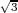
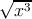
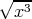

12.5 Иррациональные и трансцендентные функции
Common Lisp не содержит тип данных, который точно отображает иррациональные числовые значения. В данном разделе функции описаны так, как если бы результаты были математически точными, но фактически все они возвращают число с плавающей точкой приблизительно равное настоящему математическому значению. В некоторых местах изложены математические тождества, связанные со значениями функций, однако, два математически идентичных выражения могут быть различными по причине ошибок процесса аппроксимации при вычислениях чисел с плавающей точкой.
Когда все аргументы для функции данного раздела являются рациональными и Ъ математический результат также является (математически) рациональным, тогда, если не указано иное, реализация может вернуть или точный результат типа rational или приближенное значение с плавающей точкой одинарной точности. Если все аргументы рациональны, но результат не может быть рациональным, тогда возвращается число с плавающей точкой одинарной точности.
Если все переданные в функцию аргументы принадлежат типу (or rational (complex rational)) и Ъ математический результат является (математически) комплексным числом с рациональными действительной и мнимой частями, тогда, если не указано иное, реализация может вернуть или точный результат типа (or rational (complex rational)) или приближенный типа с плавающей точкой с одинарной точностью single-float (только если мнимая часть равна нулю) или (complex single-float). Если все аргументы типа (or rational (complex rational)), но результат не может быть выражен рациональными или комплексным рациональным числом, тогда он будет принадлежать типу single-float (только если мнимая часть равна нулю) или (complex single-float).
Все функции за исключением expt подчиняются правилам неявного приведения плавающей точки или комплексного числа. Когда, возможно после приведения типов, все аргументы становятся с плавающей точкой или комплексным числом с плавающей точкой, тогда результат будет такого же типа, что и аргумента, если не указано иное.
Заметка для реализации: Для понимания работы функций из данного раздела может быть полезной «поваренная книга чисел с плавающей точкой» от Cody и Waite [14].
12.5.1 Экспоненциальные и логарифмические функции
Наряду с обычными одно-аргументными и двух-аргументными экспоненциальными и логарифмическими функциями, sqrt рассматривается как экспоненциальная функция, потому что она возводит число в степень 1/2.
Возвращает е, возведённое в степень number, где е является основанием натурального логарифма.
[Функция] expt base-number power-number
Возвращает base-number, возведённый в степень power-number. Если base-number принадлежит типу rational и power-number — integer, тогда результат вычислений будет принадлежать типу rational, в противном случае результат будет приближенным числом с плавающей точкой.
Если power-number равен 0 (ноль целочисленного типа), тогда результат всегда будет значение 1, такого же типа что и base-number, даже если base-number равен нулю (любого типа). То есть:
| (expt x 0) ≡ (coerce 1 (type-of x)) |
Если power-number является нулём любого другого типа данных, тогда результат также равен 1 такого же типа, что и аргументы после применения правил приведения числовых типов, с одним условием: если base-number равен нулю, когда power-number является нецелочисленным нулём, то это является ошибкой.
Реализация expt может использовать различные алгоритмы для случаев с рациональным и с плавающей точкой аргументом power-number. Суть в том, что в большинстве случаев боле аккуратный результат может быть достигнут для рационального power-number. Например, (expt pi 16) и (expt pi 16.0) могут вернуть слегка разные результаты, если в первом случае алгоритм «повторных квадратов», а во втором использование логарифмов.
Результатом expt может быть комплексное число, даже если ни один аргумент не был комплексным. Такой результат получается если base-number отрицательное число и power-number не является целочисленным. Следует отметить, что (expt -8 1/3) не может вернуть -2, хотя и -2 несомненно является одним из кубических корней для -8, но основным корнем является аппроксимированное комплексное число #C(1.0 1.73205).
[Функция] log number &optional base
Функция возвращает логарифм числа number c основанием base, которое по умолчанию равно e (эпсилон, основание для натурального логарифма). Например:
| (log 8.0 2) ⇒ 3.0 |
| (log 100.0 10) ⇒ 2.0 |
В зависимости от реализации, результатом (log 8 2) может быть как 3, так и 3.0. Например:
| (log -1.0) ≡ (complex 0.0 (float pi 0.0)) |
Функция возвращает квадратный корень числа number. Если number не является комплексным числом и отрицательно, тогда результат будет комплексным числом. Например:
| (sqrt 9.0) ⇒ 3.0 |
| (sqrt -9.0) ⇒ #c(0.0 3.0) |
В зависимости от реализации результат (sqrt 9) может быть как 3, так и 3.0. Результат (sqrt -9) может быть как #(0 3) или #c(0.0 3.0).
Целочисленный квадратный корень: аргумент должен быть неотрицательным целым, и результат является наибольшим целым числом, которое меньше или равно точному положительному квадратному корню аргумента.
| (isqrt 9) ⇒ 3 |
| (isqrt 12) ⇒ 3 |
| (isqrt 300) ⇒ 17 |
| (isqrt 325) ⇒ 18 |
12.5.2 Тригонометрические и связанные с ними функции
Некоторые из функций в данном разделе, такие как abs и signum, несомненно не относятся к тригонометрическим функциям, когда рассматриваются как функции только для действительных чисел. Однако, путь, с помощью которого они расширены для операций на комплексных числах, делает их связь с тригонометрическими функциями явной.
Возвращает абсолютное значение аргумента. Для некомплексных чисел x,
| (abs x) ≡ (if (minusp x) (- x) x) |
и результат всегда имеет тот же тип, что и аргумент.
Для комплексных чисел z, абсолютное значение может быть вычислено как
| (sqrt (+ (expt (realpart z) 2) (expt (imagpart z) 2))) |
Заметка для реализации: Аккуратные разработчики не будут напрямую использовать эту формулу для всех комплексных чисел. Очень большие и очень маленькие части комплексных чисел будут обрабатываться специализированно для избежания выходов за верхние и нижние границы значений.
Например:
| (abs #c(3.0 -4.0)) ⇒ 5.0 |
Результатом (abs #(3 4)) может быть или 5 или 5.0, в зависимости от реализации.
Аргументом (так называется функция phase) числа z (arg(z) ≡(phase z)) является угол φ (в радианах) радиус-вектора точки, соответствующей комплексному числу z.
Если аргумент является комплексным числом с частями из чисел с плавающей точкой, то результатом является число с плавающей точкой того же типа. Если аргумент является числом с плавающей точкой, то результатом является число с плавающей точкой того же типа. Если аргумент является комплексным числом с частями из рациональных чисел, то результатом является число с плавающей точкой одинарного типа.
По определению,
| (signum x) ≡ (if (zerop x) x (/ x (abs x))) |
Для рационального числа, signum будет возвращать один из вариантов: -1, 0 или 1, в соответствии с тем, является ли число отрицательным, нулём или положительным. Для числа с плавающей точкой, результатом будет число с плавающей точкой того же типа и значением: − 1, 0 или 1. Для комплексного числа z, (signum z) является комплексным числом с таким же аргументом (phase), но с единичным модулем. Но если z равен комплексному нулю, результатом является само число z. Например:
| (signum 0) ⇒ 0 |
| (signum -3.7L5) ⇒ -1.0L0 |
| (signum 4/5) ⇒ 1 |
| (signum #C(7.5 10.0)) ⇒ #C(0.6 0.8) |
| (signum #C(0.0 -14.7)) ⇒ #C(0.0 -1.0) |
Для некомплексных рациональных чисел signum является рациональной функцией, но для комплексных чисел может быть иррациональной.
[Функция] sin radians
[Функция] cos radians
[Функция] tan radians
sin возвращает синус аргумента, cos — косинус, tan — тангенс. Аргумент рассматривается как угол в радианах. Аргумент может быть комплексным числом.
Функция вычисляет ei⋅radians. Имя cis обозначает «cos + i sin», потому что ei𝜃 = cos 𝜃 + i sin 𝜃. Аргумент рассматривается как угол в радианах и может быть любым некомплексным числом. Результатом является комплексное число, у которого действительная часть это косинус аргумента, и мнимая — синус аргумента. Другими словами, результат это комплексное число, у которого аргумент (фаза) равна (mod 2∕pi) и модуль равен единице.
Заметка для реализации: Чаще всего дешевле вычислить синус и косинус угла вместе, чем выполнять два раздельных вычисления.
[Функция] asin number
[Функция] acos number
asin возвращаем арксинус аргумента, и acos — арккосинус аргумента. Результат будет в радианах. Аргумент может быть комплексным числом.
Функции арксинус и арккосинус могут быть математически определены для аргумента z следующим образом:
| Арксинус | −i log 
|
| Арккосинус | −i log  |
Следует отметить, что результат asin или acos может быть комплексным числом, даже если аргумент не являлся комплексным. Такое происходит, когда абсолютное значение аргумента превышает 1.
Функция вычисляет арктангенс и возвращает результат в радианах.
Ни один из двух аргументов y и x не может быть комплексным. Знаки y и x используются для определения квадранта. x может быть нулём при условии, что y не ноль. Значение atan лежит между −pi (невключительно) и pi (включительно). Следующая таблица описывает различные специальные случаи.
| Условие | Декартово местоположение | Промежуток результата | |
| y = +0 | x > 0 | Точно выше положительной оси x | + 0 |
| y > 0 | x > 0 | Квадрант I | + 0 < result < π∕2 |
| y > 0 | x = ±0 | Положительная ось y | π∕2 |
| y > 0 | x < 0 | Квадрант II | π∕2 < result < π |
| y = +0 | x < 0 | Точно ниже негативной оси x | π |
| y = −0 | x < 0 | Точно выше отрицательной оси x | π |
| y < 0 | x < 0 | Квадрант III | − π < result < −π∕2 |
| y < 0 | x = ±0 | Отрицательная ось y | − π∕2 |
| y < 0 | x > 0 | Квадрант IV | − π∕2 < result < −0 |
| y = −0 | x > 0 | Точно ниже положительной оси x | − 0 |
| y = +0 | x = +0 | Рядом с центром | + 0 |
| y = −0 | x = +0 | Рядом с центром | − 0 |
| y = +0 | x = −0 | Рядом с центром | π |
| y = −0 | x = −0 | Рядом с центром | − π |
Следует отметить, что случай y = 0,x = 0 при отсутствии минус ноля является ошибкой, но четыре случая y = ±0,x = ±0 определены при условии существования минус ноля.
Если не указывать x, y может быть комплексным. Результатом функции является арктангенс y, который может быть определён следующей формулой:
| Арктангенс | log(1+iy)−log(1−iy) 2i |
Для некомплексного аргумента y, результат будет некомплексным и будет лежать между − π∕2 и π∕2 (оба невключительно).
Данная глобальная переменная содержит значение наиболее приближенное к pi в длинном формате числа с плавающей точкой. Например:
| (defun sind (x) ;Аргумент в градусах |
| (sin (* x (/ (float pi x) 180)))) |
Приближение к pi с другими точностями может быть выполнено с помощью (float pi x), где x является числом с плавающей точкой необходимой точности, или с помощью (coerce pi type), где type является именем необходимого типа, как например short-float.
[Функция] sinh number
[Функция] cosh number
[Функция] tanh number
[Функция] asinh number
[Функция] acosh number
[Функция] atanh number
Данные функции вычисляют гиперболический синус, косинус, тангенс, арксинус, арккосинус и арктангенс, которые для аргумента z математически определены следующим образом:
| Гиперболический синус | (e z −e−z)∕2 |
| Гиперболический косинус | (e z + e−z)∕2 |
| Гиперболический тангенс | (e z − e−z)∕(ez + e−z) |
| Гиперболический арксинус | log  |
| Гиперболический арккосинус | log  |
| Гиперболический арктангенс | log |
Следует отметить, что результат acosh может быть комплексным, даже если аргумент комплексным числом не был. Это происходит если аргумент меньше 1. Также результат atanh может быть комплексным, даже если аргумент не был комплексным. Это происходит если абсолютное значение аргумента было больше 1.
12.5.3 Точки ветвления, главные значения и краевые условия на комплексной плоскости
Многие иррациональные и трансцендентные функции на комплексной плоскости многозначны. Например, в общем случае, логарифмическая функция имеет бесконечное количество комплексных значений. В каждом таком случае для возврата должно быть выбрано одно главное значение.
Common Lisp определяет точки ветвления, главные значения и краевые условия для комплексных функции в соотвествие с предложениями для комплексных функций в APL [36]. Содержимое раздела по большей части скопировано из этих предложений.
[Однако перевод не сделан. Не могу назвать себя знатоком ТФКП]